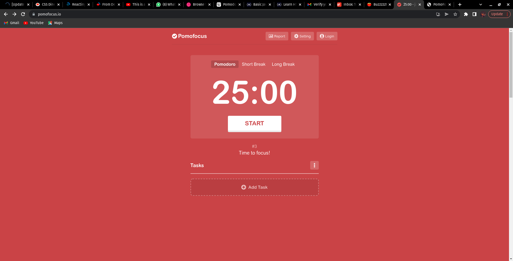

PomoFocus
Features
- The name of the timer(pomofocus) is written at the top in the nav bar with a Report, Setting and Login button
- Below the Nav bar we have the Pomodoro, Short Break and Long Break buttons, which when clicked on the background color and the time changes.
- The Pomodoro time is set at 25min, Short break time at 5min and Long break time at 15min.
- The start button is just below the timer. it also allows you to pause the timer sfter clicking start.
- At the end of each Pomodoro there is a notification sound
- There is a space where you can add task, it lets you specify the task you're currently working on with the timer. you can also "Add Notes" for free, but you have to upgrade to the Premium Plan for you to be able to access the "Add Project feature"
- There is a detailed note at the bottom of the page which explains how to use the Timer wit the basic features.
- Pomofocus also let's you import task from Todoist

PomoFocus
NEXT